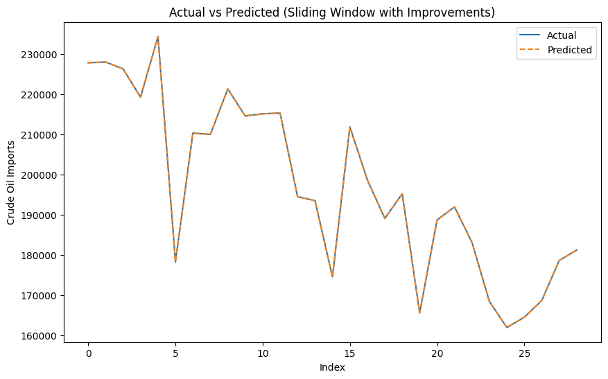
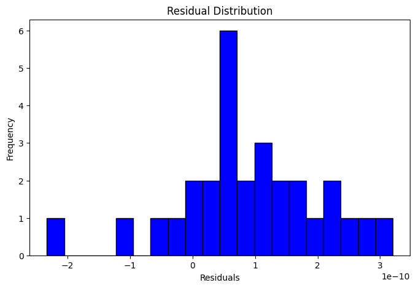
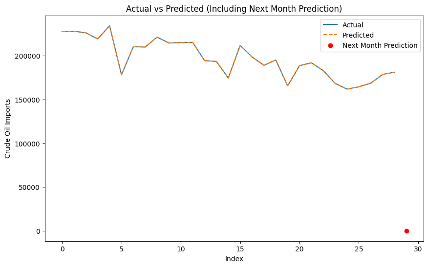

from google.colab import drive
drive.mount('/content/drive')
import pickle
import pandas as pd
---------------------------------------------------------------------------
KeyboardInterrupt Traceback (most recent call last)
<ipython-input-1-eea40637b52e> in <cell line: 2>()
1 from google.colab import drive
----> 2 drive.mount('/content/drive')
3 import pickle
4 import pandas as pd
/usr/local/lib/python3.10/dist-packages/google/colab/drive.py in mount(mountpoint, force_remount, timeout_ms, readonly)
98 def mount(mountpoint, force_remount=False, timeout_ms=120000, readonly=False):
99 """Mount your Google Drive at the specified mountpoint path."""
--> 100 return _mount(
101 mountpoint,
102 force_remount=force_remount,
/usr/local/lib/python3.10/dist-packages/google/colab/drive.py in _mount(mountpoint, force_remount, timeout_ms, ephemeral, readonly)
135 )
136 if ephemeral:
--> 137 _message.blocking_request(
138 'request_auth',
139 request={'authType': 'dfs_ephemeral'},
/usr/local/lib/python3.10/dist-packages/google/colab/_message.py in blocking_request(request_type, request, timeout_sec, parent)
174 request_type, request, parent=parent, expect_reply=True
175 )
--> 176 return read_reply_from_input(request_id, timeout_sec)
/usr/local/lib/python3.10/dist-packages/google/colab/_message.py in read_reply_from_input(message_id, timeout_sec)
94 reply = _read_next_input_message()
95 if reply == _NOT_READY or not isinstance(reply, dict):
---> 96 time.sleep(0.025)
97 continue
98 if (
KeyboardInterrupt:
import pandas as pd
import numpy as np
from sklearn.model_selection import train_test_split
from sklearn.linear_model import LinearRegression
from sklearn.preprocessing import StandardScaler
from sklearn.metrics import mean_squared_error, mean_absolute_error
import matplotlib.pyplot as plt
# Load dataset
data = pd.read_csv("/content/drive/My Drive/psd/tugas/dataset/Imports Oil.csv")
# Preprocessing
data['Date and Month'] = pd.to_datetime(data['Date and Month'])
data = data.sort_values(by='Date and Month') # Pastikan data berurutan berdasarkan waktu
# Rolling mean and standard deviation
window_size = 3 # Jumlah nilai sebelumnya yang digunakan untuk prediksi
data['Rolling_Mean'] = data['Crude oil imports from the World to the US (a thousand barrels)'].rolling(window=window_size).mean()
data['Rolling_Std'] = data['Crude oil imports from the World to the US (a thousand barrels)'].rolling(window=window_size).std()
# Create sliding window features
X, y = [], []
values = data['Crude oil imports from the World to the US (a thousand barrels)'].values
for i in range(window_size, len(values)):
# Tambahkan rolling mean dan std ke fitur
feature_window = values[i-window_size:i]
rolling_mean = data['Rolling_Mean'].iloc[i]
rolling_std = data['Rolling_Std'].iloc[i]
# Kombinasikan fitur sliding window dengan rolling statistics
X.append(np.append(feature_window, [rolling_mean, rolling_std]))
y.append(values[i]) # Target adalah nilai saat ini
X = np.array(X)
y = np.array(y)
# Drop NaN rows akibat rolling mean dan std
X = X[~np.isnan(X).any(axis=1)]
y = y[~np.isnan(y)]
# Split data menjadi training dan testing
X_train, X_test, y_train, y_test = train_test_split(X, y, test_size=0.2, random_state=42, shuffle=False)
# Feature scaling
scaler = StandardScaler()
X_train = scaler.fit_transform(X_train)
X_test = scaler.transform(X_test)
# Train Linear Regression model
model = LinearRegression()
model.fit(X_train, y_train)
# Predict on test data
y_pred = model.predict(X_test)
# Evaluate model
mse = mean_squared_error(y_test, y_pred)
mae = mean_absolute_error(y_test, y_pred)
print(f"Mean Squared Error: {mse}")
print(f"Mean Absolute Error: {mae}")
# Visualisasi hasil prediksi
plt.figure(figsize=(10, 6))
plt.plot(range(len(y_test)), y_test, label="Actual")
plt.plot(range(len(y_pred)), y_pred, label="Predicted", linestyle='--')
plt.xlabel('Index')
plt.ylabel('Crude Oil Imports')
plt.title('Actual vs Predicted (Sliding Window with Improvements)')
plt.legend()
plt.show()
# Distribusi residual
residuals = y_test - y_pred
plt.figure(figsize=(8, 5))
plt.hist(residuals, bins=20, color='blue', edgecolor='black')
plt.title('Residual Distribution')
plt.xlabel('Residuals')
plt.ylabel('Frequency')
plt.show()
<ipython-input-6-d5be6116a9dd>:13: UserWarning: Could not infer format, so each element will be parsed individually, falling back to `dateutil`. To ensure parsing is consistent and as-expected, please specify a format.
data['Date and Month'] = pd.to_datetime(data['Date and Month'])
Mean Squared Error: 2.2723849412546402e-20
Mean Absolute Error: 1.2243680399039696e-10


# Ambil 2 input terakhir dari data
latest_window = X_test[-1, :-2] # Nilai sliding window terakhir tanpa rolling mean dan std
latest_mean = X_test[-1, -2] # Rolling mean terakhir
latest_std = X_test[-1, -1] # Rolling std terakhir
# Gabungkan ke dalam satu array input
next_input = np.append(latest_window, [latest_mean, latest_std])
next_input = next_input.reshape(1, -1) # Ubah menjadi 2D array
# Transform input menggunakan scaler
next_input_scaled = scaler.transform(next_input)
# Prediksi bulan depan
next_prediction = model.predict(next_input_scaled)
print(f"Prediksi Crude Oil Imports untuk bulan depan: {next_prediction[0]:.2f}")
# Tambahkan ke grafik prediksi sebelumnya
plt.figure(figsize=(10, 6))
plt.plot(range(len(y_test)), y_test, label="Actual")
plt.plot(range(len(y_pred)), y_pred, label="Predicted", linestyle='--')
# Plot prediksi bulan depan
plt.scatter(len(y_test), next_prediction, color='red', label="Next Month Prediction")
plt.xlabel('Index')
plt.ylabel('Crude Oil Imports')
plt.title('Actual vs Predicted (Including Next Month Prediction)')
plt.legend()
plt.show()
Prediksi Crude Oil Imports untuk bulan depan: -3.31
